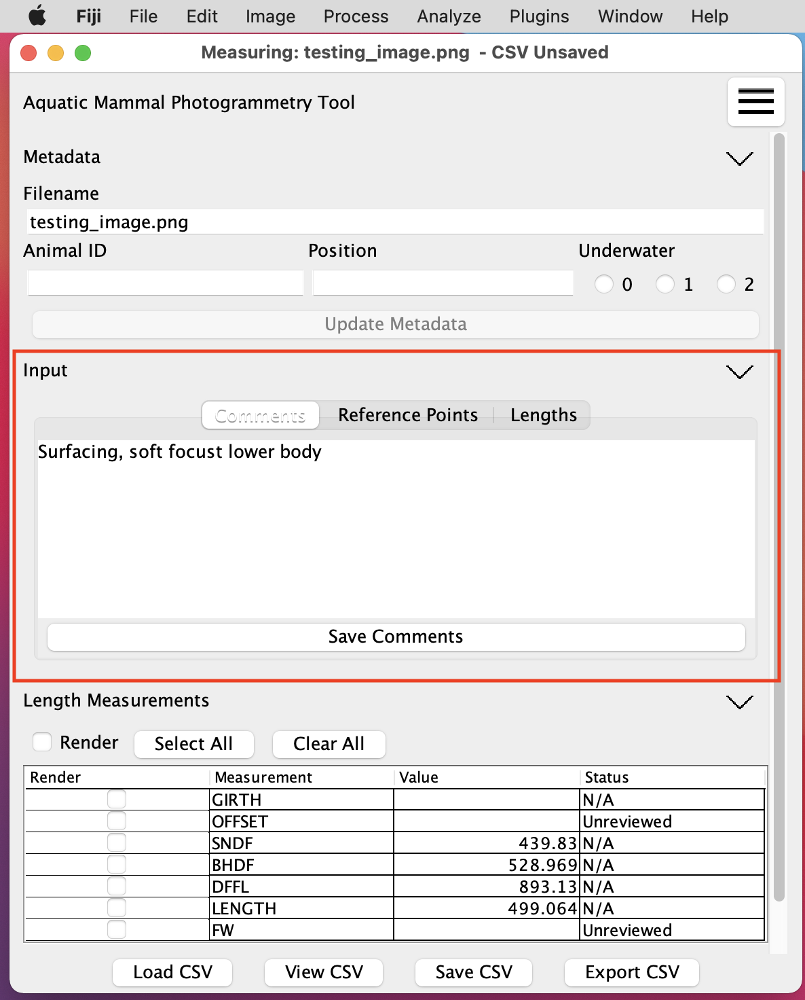
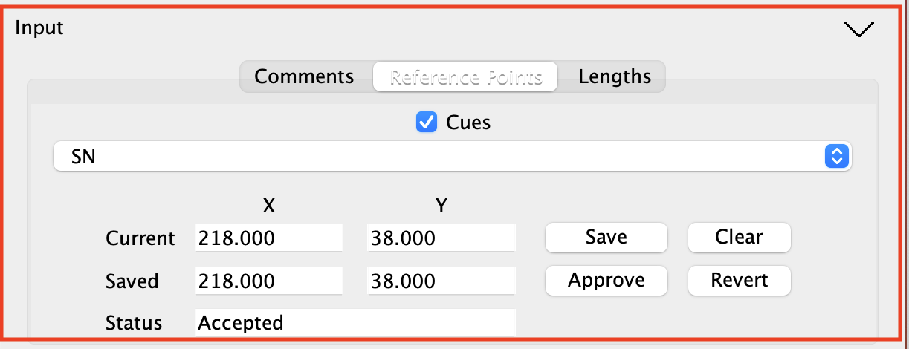
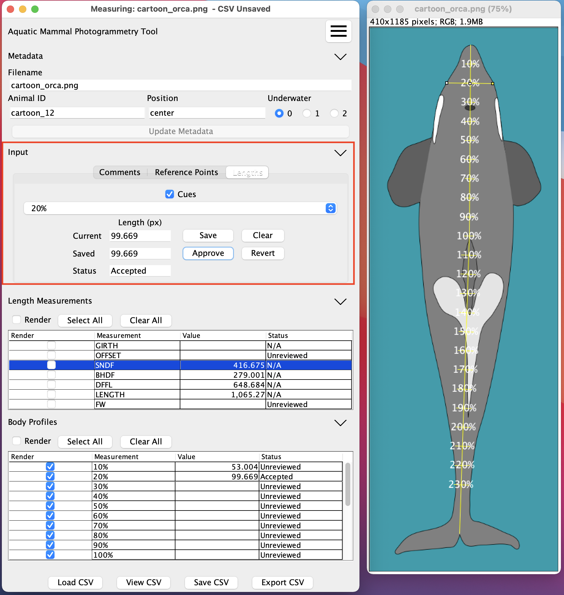

Input Panel
Input Panel
The input panel is composed of three tabs: Comments, Reference Points, and Lengths. The inputs will automatically load the data the currently active image. Please note that the save button for a measurement or commment must be pressed to actually store the measurement.
Comments

During measurement the user may enter freeform comments in the Comments tab. The Save Comments button will be active whenever there are unsaved comments.
Reference Points

The Reference Points tab is used to place measurement landmarks on the image. These landmarks are used to provide cueing for length measurements, and also to automatically perform some measurements of the animal. Please see Measurement Type for information on how to specify an automatically computed length. Rendering the landmarks is controlled by the Cues checkbox. When the Reference Points tab is selected, the ImageJ point selector is automatically activated.
Reference Points Details

There are a number of controls in the Reference Points tab.
The top control control is the Cues checkbox, which enables the drawing of the defined landmarks in the image. Details on configuring what landmarks are drawn and when they are drawn is described in the section on Cue and Calculation Configuration
The next control is a dropdown list containing the landmarks that the user would like to draw. Selecting from the list will load and draw and existing point for the landmark, and display the currently saved position in the middle two text boxes aligned with the Saved label. If a value has been saved it will also be shown in the top two text boxes aligned with the current label.
The buttons control how values are saved and updated as well as the value shown in the Status text field. The Save button causes the values in the Current fields to be written to the CSV data and then loaded into the Saved text fields. The status of the landmark will be set to Unreviewed and then shown in the Status. The Clear button clear the selection in the image and clears the values in Current, it does not alter the saved values or the status. The Revert button copies the saved value into Current and updated the selection in the image, it does not alter the status. The Approve button updates the status for the landmark to Accepted and then causes that to be loaded into the Status field.
Defining landmarks
In order for a landmark to appear in this list the landmark be defined as two entries of the form "landmark_name_x" and "landmark_name_y" both with type point in the CSV-Columns.csv file. An additional entry of the form "landmark_name_reviewed" with type boolean is also required.
Lengths
 The Lengths tab is similiar to the Reference Points, but is used for taking manual length measurements. Rendering the length guidelines is controlled by the Cues checkbox. When the Lengths tab is selected, the ImageJ line selector is automatically activated.
Length Details

The controls and cues in the Lengths tab behave like the controls in the Reference Points tab.
Defining lengths
In order for a length to appear in this list the length be defined as four entries of the form "landmark_name_x_start", "landmark_name_y_start", "landmark_name_x_end", and "landmark_name_y_end" all with type auto point in the CSV-Columns.csv file. An additional entry of the form "landmark_name_reviewed" with type boolean is also required.